组内老师
博士后
组内学生
博士研究生
硕士研究生
郭隆鑫
研究方向：交通流预测
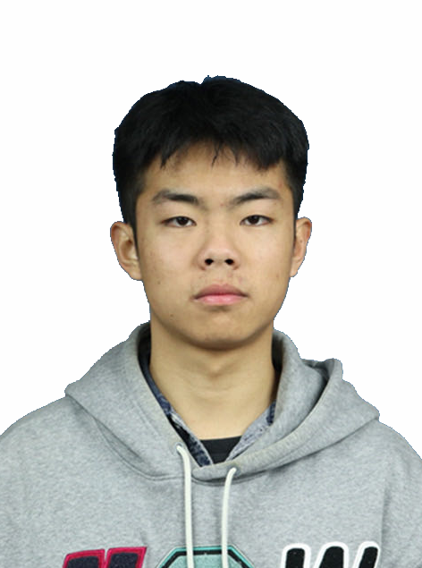
2022硕士生
研究方向：用户身份链接
晏梓昂
研究方向：用户身份链接
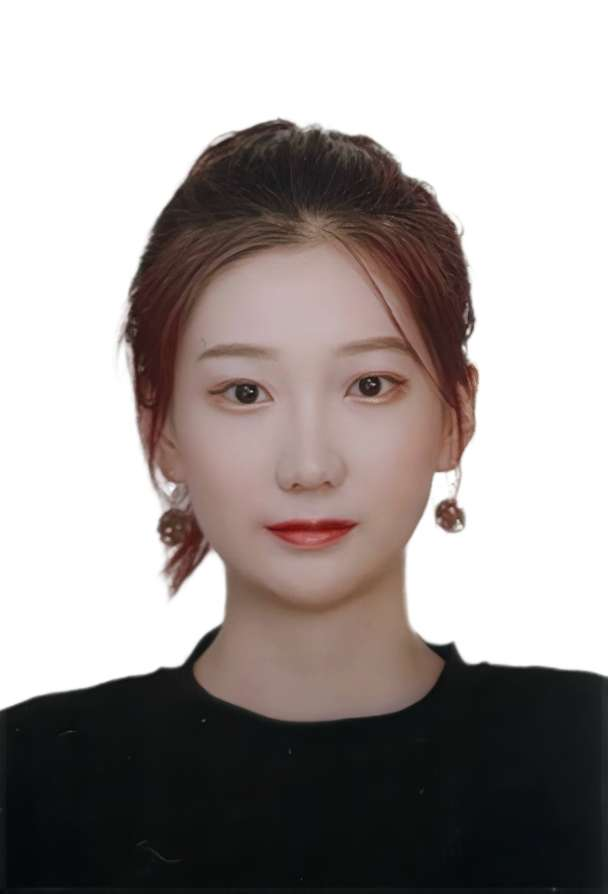
2022硕士生
研究方向：轨迹表征学习
于沁禾
研究方向：轨迹表征学习
张浩
研究方向：轨迹用户链接
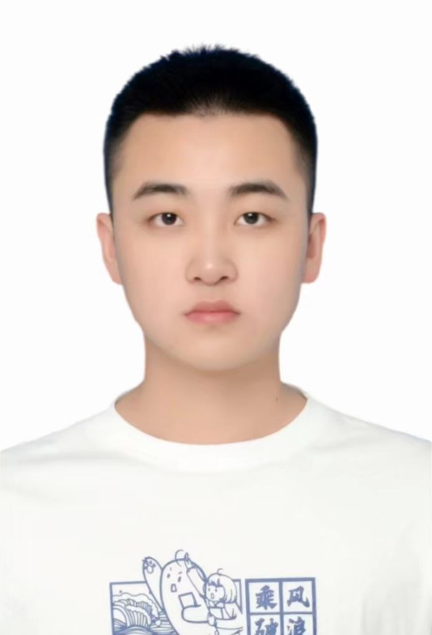
2022硕士生
研究方向：异质图神经网络
于朋健
研究方向：异质图神经网络
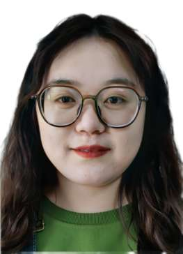
2022硕士生
研究方向：motif预测
杨雯
研究方向：motif预测
李建涛
研究方向：Motif计数
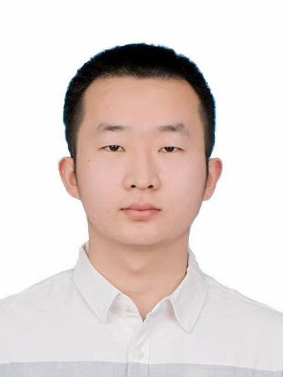
2023硕士生
研究方向：模型轻量化
井立宪
研究方向：模型轻量化
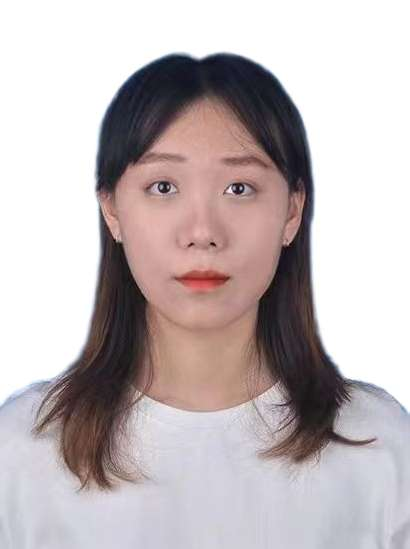
2023硕士生
研究方向：异常轨迹检测
刘晨曦
研究方向：异常轨迹检测
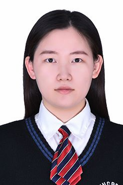
2023硕士生
研究方向：序列推荐
刘雨辰
研究方向：序列推荐
何浩生
研究方向：信息年龄
张潇
研究方向：轨迹相似度计算
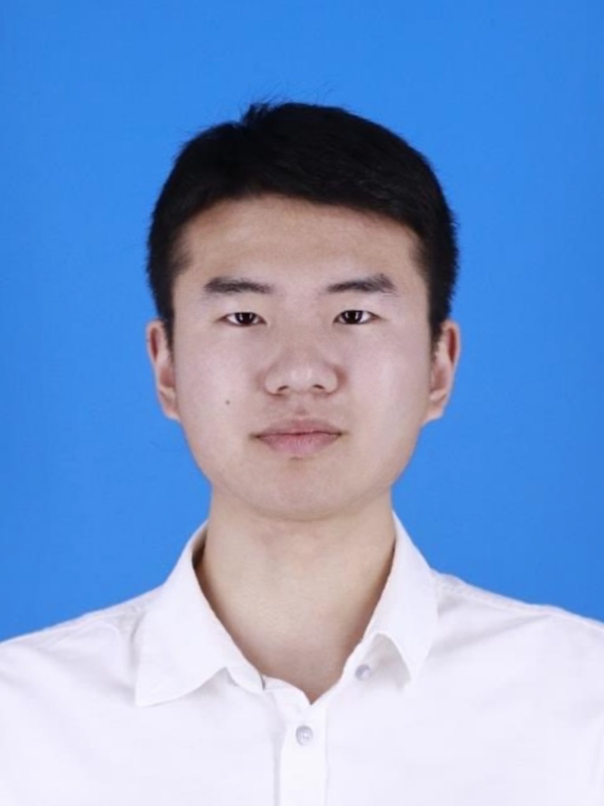
2023硕士生
研究方向：轨迹表征学习
夏鸿
研究方向：轨迹表征学习
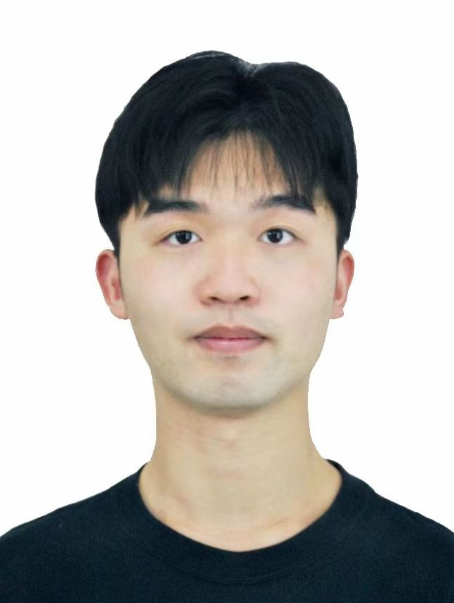
2023硕士生
研究方向：动态图表征学习
何一鸣
研究方向：动态图表征学习
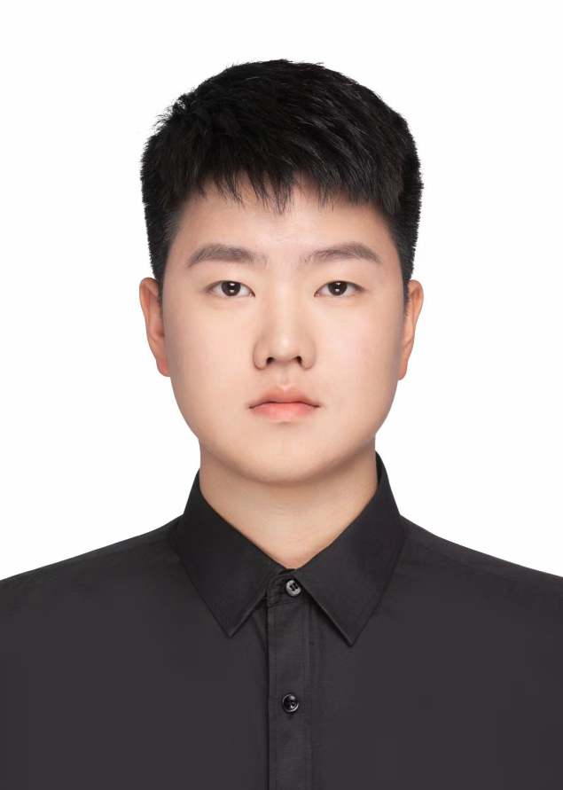
2023硕士生
研究方向：时间序列预测
颜瀚
研究方向：时间序列预测
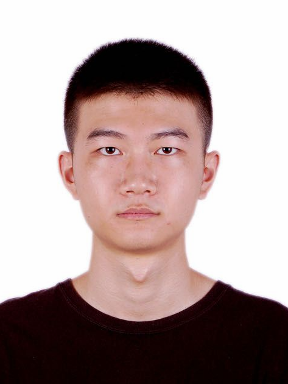
2023硕士生
研究方向：交通预测
曹凌啸
研究方向：交通预测
朱晶晶
研究方向：交通/时空预测
卓裔
研究方向：时序数据缺失填补
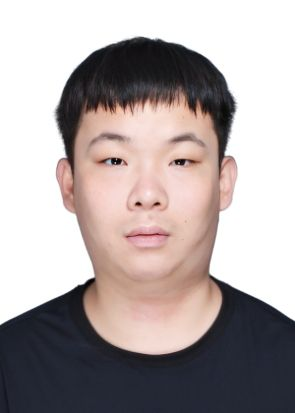
2024年硕士
研究方向：时空数据挖掘
马汉卿
研究方向：时空数据挖掘
谷少轩
研究方向：轨迹表示学习
崔荣浩
研究方向：图神经网络
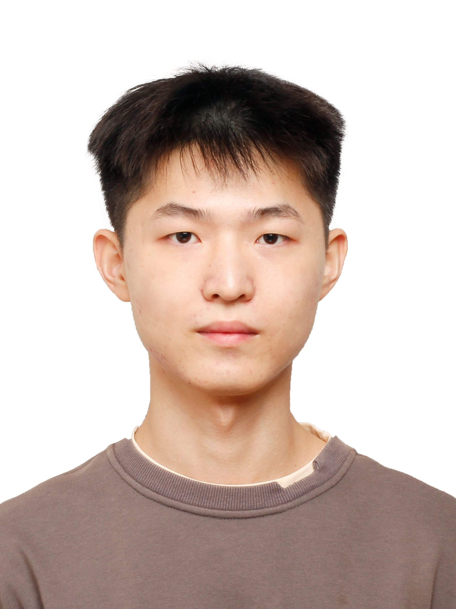
2024年硕士
研究方向：海水温度预测
吕子龙
研究方向：海水温度预测
陈英杰
研究方向：推荐系统
毕业学生
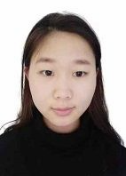
2021硕士生
研究方向：轨迹相似性查询
毕业去向：考公
朱静茹
研究方向：轨迹相似性查询
毕业去向：考公
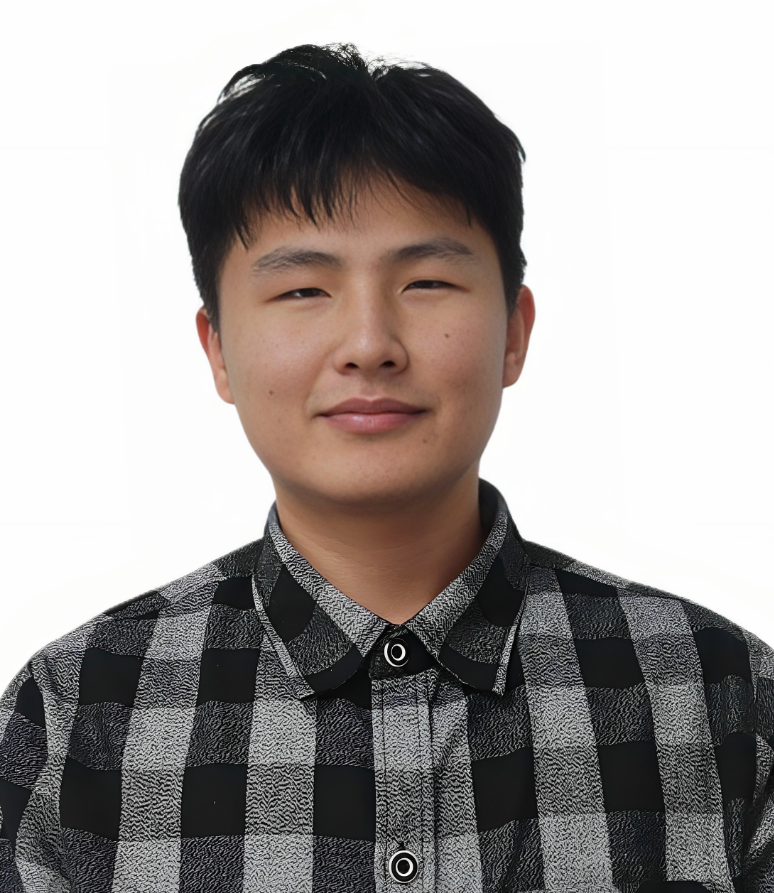
2021硕士生
研究方向：移动社交关系推理
毕业去向：北京理工大学计算机学院 在读博士生
秦广明
研究方向：移动社交关系推理
毕业去向：北京理工大学计算机学院 在读博士生

陈怡辛
研究方向：属性图异常检测
毕业去向：考公

王仲煜
研究方向：海洋预测
毕业去向：青岛市芯恩科技有限公司
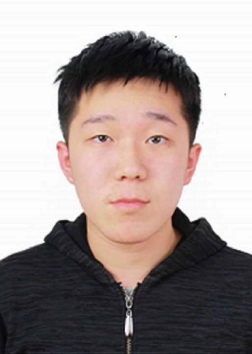
2021硕士生
研究方向：矩阵补全
毕业去向：中电41所
税常盛
研究方向：矩阵补全
毕业去向：中电41所

胡杰
研究方向：动态网络表征学习
毕业去向：四川农商联合银行
李树哲
研究方向：下一个兴趣点推荐
毕业去向：快手
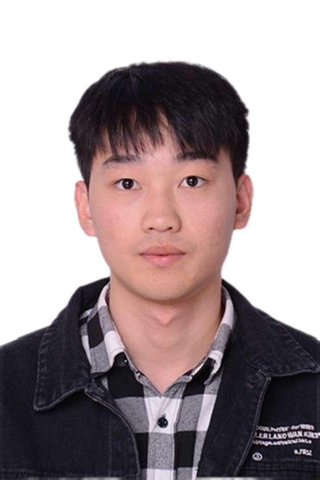
2021硕士生
研究方向：Motif计数
毕业去向：浪潮
张志浩
研究方向：Motif计数
毕业去向：浪潮
付超凡
研究方向：多层异质图神经网络
毕业去向：淄博市公安局
陆芳博
研究方向：轨迹异常检测
毕业去向：中国银行四川省分行信息科技部